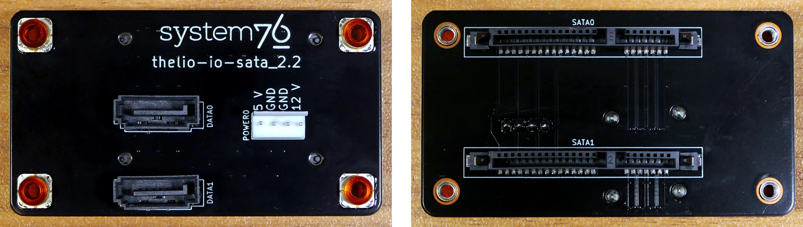

nebula19 (Parts & Assembly)
The nebula19 chassis is ready to be outfitted with standard personal computer components. If the system has already been built, ensure the system is powered off and all cables are unplugged from the motherboard, PCIe cards, power supply, and front I/O before opening the chassis.
The preinstalled velcro strips are left partially unwrapped to aid in removal. When building the system, you can optionally wrap the velcro up the rest of the way.
- Replacing the front accent strip
- Removing the top case
- Removing the CPU duct
- Unpacking the included accessories
- Installing/removing the side fan bracket
- Installing the motherboard
- Installing the CPU duct fans
- Installing the GPU
- Installing the SATA backplane
- Installing 2.5" drives
- Installing the bottom case fan
- Installing side intake fan
- Installing the power supply
- Wiring the front I/O and power button
Replacing the front accent strip:
nebula19 includes a customizable accent panel on the front of the case, which can be swapped to change the case's look and feel. The instructions for swapping the accent are also available in video form.
- Tools required: None
Steps to replace the front accent strip:
- Place the nebula19 on the edge of the desk so the front side is hanging off of the desk.
- The nebula19 can alternatively be lifted or tilted so the front of the computer is hovering above the desk.
- Slide the accent strip down to unlock it.
- The accent can be gripped at the bottom edge.
- Pull the accent strip off of the case, starting with the bottom edge.
- Place the new accent strip onto the front of the case and slide it up to lock it into place.

Removing the top case:
The top case can be removed to access the internal components.
- Tools required: Cross-head (Phillips) screwdriver (optional)
Steps to remove the top case:
- Remove the four outer screws holding the top case onto the machine.

- Slide the top case up and off of the machine.
Removing the CPU duct:
The CPU duct supports one or more of the CPU fans and guides airflow from the side of the case through the CPU radiator to the back exhaust vent. The CPU duct is custom-designed to work with the Noctua NH-U9S CPU cooler (before April 2024) or the Be Quiet! Pure Rock Slim 2 BK030 (after April 2024) that's optionally included with nebula19.
- Tools required: Cross-head (Phillips) screwdriver
Steps to remove the CPU duct:
- Follow the steps above to remove the top case.
- Unscrew the two side screws holding the CPU duct onto the top crossbar.

- Unscrew the four back screws holding the CPU duct onto the chassis.
- Hold onto the duct while removing the final screw so it doesn't fall.

- Pull the CPU duct out of the chassis.
- When replacing the CPU duct, ensure all fan cables are plugged into the fan splitter board in the top right of the chassis.
Unpacking the included accessories:
nebula19 includes the following components preinstalled:
- 1x
nebula_iopower button controller board - 1x
MYS7523top I/O board - 2x four-pin fan splitter boards
- 1x back CPU duct fan
- Be Quiet! Pure Wings 2 92mm (
BQ PUW2-9225-MR-PWM)
- Be Quiet! Pure Wings 2 92mm (
- 2x short velcro straps
- 1x on the side of the chassis
- 1x on the side fan bracket
In addition, nebula19 ships with the following non-installed accessories:
- 1x Screw and velcro box
- 8x short velcro straps
- 1x long velcro strap
- 4x motherboard standoffs
- 4x M3 (motherboard) screws
- 4x fan screws
- 1x Bottom case fan
- Be Quiet! Silent Wings 4 140mm (
BQ SIW4-14025-LF-PWM)
- Be Quiet! Silent Wings 4 140mm (
- 1x CPU cooler w/ fan (optional)
- After April 2024: Be Quiet! Pure Rock Slim 2 (
BK030) w/ Pure Wings 2 92mm (BQ PUW2-9225-MR-PWM) - Before April 2024: Noctua
NH-U9Scooler w/NF-A9 PWMfan
- After April 2024: Be Quiet! Pure Rock Slim 2 (
- 1x Side bracket fan (optional)
- Be Quiet! Silent Wings 4 120mm (
BQ SIW4-12025-MF-PWM)
- Be Quiet! Silent Wings 4 120mm (
Steps to unpack the included accessories:
- Follow the steps above to remove the top case and remove the CPU duct.
- Remove the accessory boxes from the chassis.

- Open the accessory boxes as needed.
Installing/removing the side fan bracket:
The side fan bracket provides a mounting point for an extra intake fan, such as the optional BQ SIW4-12025-MF-PWM.
If no optional accessories were ordered with the nebula19, then the side fan bracket will ship preinstalled. If optional accessories were included in the order, then they will ship inside of the chassis, and the side fan bracket will ship in a separate box. It can be installed after assembling the rest of the computer.

The fan splitter on the side fan bracket can be used for the side intake fan installed on the side fan bracket as well as the bottom chassis intake fan.
- Tools required: Cross-head (Phillips) screwdriver
Steps to unpack and install the side fan bracket:
- Remove the top case and unpack the included accessories.
- Cut the tape of the side fan bracket box and remove the side fan bracket and screw bag from the box.

- Screw the side fan bracket into the system using the four M3 screws included with the side fan bracket.
- The fan splitter board should be on the right side (with the dual headers facing outwards) and the rockets should point upwards.
Steps to remove the side fan bracket:
- Remove the top case.
- Unscrew the four screws holding the side fan bracket in place (two on the front of the case, two on the back.)
- Pull the side fan bracket out of the chassis.
Installing the motherboard:
nebula19 supports the following standard motherboard sizes:
- Mini-DTX
- Mini-ITX
Four standoffs and motherboard screws are included.
- Tools required: Cross-head (Phillips) screwdriver
Steps to install the motherboard:
- If they are installed, remove the top case, remove the CPU duct and remove the side fan bracket.
- Locate the standoffs and M3 screws from the brown screw and velcro box.

- Insert the four standoffs into the holes in the chassis.

- Install the motherboard's I/O shield onto the back of the chassis by pressing it into place from the inside.
- Place the motherboard into the chassis, aligning the motherboard's screw holes with the installed standoffs.
- Screw the motherboard into the standoffs using the M3 screws.
Installing the CPU duct fans:
nebula19 ships with one 92mm fan (BQ PUW2-9225-MR-PWM) installed in the back of the CPU duct. If you install a CPU cooler with its own 92mm fan, such as the optional Be Quiet! Pure Rock Slim 2 BK030 or Noctua NH-U9S coolers sold with nebula19 (which include an additional BQ PUW2-9225-MR-PWM fan or a Noctua NF-A9 PWM fan, respectively), then the CPU cooler's fan can be mounted in the front of the CPU duct.
These instructions use the Noctua NH-U9S as an example.
- Tools required: Cross-head (Phillips) screwdriver
Steps to install the CPU cooler fan (front):

- Remove the
NH-U9Sfrom the box.

- Remove the included
NF-F12fan from the cooler heatsink by pulling the metal tabs (highlighted green above) off of the heatsink and fan. - Install the cooler onto the motherboard/processor.
- Remove the front fan bracket from the CPU duct by unscrewing the four screws (highlighted green below) and pulling it out of the CPU duct.
- Place the spinning side of the down up and the stationary cover up, then orient the fan so the wire points towards the top left (and the fan cover's logo sticker is upside-down).
- The wire can be oriented in other directions if desired for cable management purposes, as long as the wire is able to reach the fan splitter board after the fan is installed.
- Place the fan bracket over the fan so the thinnest side (without the 90-degree flange) is on the right.
- Screw in the four fan screws.
- It may take some force to thread the fan screws into the fan's plastic frame.

- Place the CPU duct fan and bracket into the CPU duct, with the thinnest side of the bracket (without the 90-degree flange) pointed into the duct.
- The spinning side of the fan should face the front of the chassis, while the stationary cover should face the back of the chassis.
- Replace the screws holding the fan bracket onto the CPU duct.
- The front and back brackets face in opposite directions from each other.
Steps to replace the preinstalled CPU duct fan (back):
- Remove the top case and the CPU duct.
- Remove the back fan bracket from the CPU duct by unscrewing the four screws (highlighted yellow below) and pulling it out of the CPU duct.

- Unscrew the four fan screws holding the fan onto the bracket.
- When reinstalling the fan, the stationary cover should face the back of the chassis, and the wire should face the upper interior corner of the chassis (with the fan cover's logo upside-down). The thinnest side of the bracket (without the 90-degree flange) should face directly into the duct.
- The wire can be oriented in other directions if desired for cable management purposes, as long as the wire is able to reach the fan splitter board after the fan and CPU cooler heatsink are installed.
Installing the GPU:
nebula19 supports GPUs up to 278.175mm long. For optimal cooling and ease of installation, GPUs longer than 268.175mm are not recommended.
These instructions also apply to other PCI Express cards, such as add-in sound cards or networking cards.
- Tools required: Cross-head (Phillips) screwdriver
Steps to install the GPU:
- If not already installed, install the motherboard.
- If the motherboard is already installed and the system is assembled, then remove the top case and remove the side fan bracket.
- Unscrew the two screws holding the PCIe bracket onto the chassis, then remove the bracket.
- Remove a PCIe slot cover for each slot the new GPU will take up.
- Additional slot covers may fall off after removing the PCIe brakcet; hold them up when replacing the bracket.
- Install the GPU into the motherboard.
- Replace the PCIe bracket, which will hold the end of the GPU in place.
Installing the SATA backplane:
nebula19 is designed to work with an optional SATA backplane to allow for easy hot-swapping of 2.5" storage drives. The SATA backplane can be seen below.

- Tools required: Cross-head (Phillips) screwdriver
Steps to install the SATA backplane:
- Remove the top case.
- The side fan bracket can also be removed for easier access to the SATA backplane screws and wiring.
- Unscrew and remove the 2.5" drive cage's cover.

- If the SATA backplane's screw holes are covered by a translucent film, remove the film.
- Place the SATA backplane into the 2.5" drive cage, with the
SATA0label facing the front of the chassis.
- Screw the backplane into the drive cage from the bottom using the four included M3 screws.
- Remember to turn the screwdriver counterclockwise instead of clockwise if you're looking at the screws from the top. Alternatively, the system can be placed on its side for easier access to the screw holes.
- Connect the white
POWER0header on the back of the SATA backplane to the power supply, and the blackDATA0andDATA1ports to two of the motherboard's SATA ports.- The
POWER0header uses a four-pin Berg connector, also known as a floppy drive power connector.
- The
- Install any 2.5" SATA drives and replace the drive cage cover, side fan bracket (if necessary), and top case.
Installing 2.5" drives:
The drive cage can hold two 2.5" drives. Drives of 7.5mm, 9mm, or 15mm are supported. Airflow will decrease below recommended levels with drives larger than 15mm.
- Tools required: Cross-head (Phillips) screwdriver
Steps to install 2.5" drives:
- Remove the top case.
- Unscrew and remove the 2.5" drive cage's cover.
- Remove the plastic ring from the top crossbar and slide out four screws for each drive being installed.
- Insert two screws into each side of the 2.5" drive, then slide the drive into the drive cage, aligning the rubber mounts on the screws around the metal of the drive cage.
- The larger portion of the SATA connector (the power section) should be at the top, while the smaller portion (the data section) should be at the bottom.
- If the optional SATA backplane is not present, connect the SATA data and power cables from the bottom of the drive cage.
- A cutout in the chassis allows easy access to the bottom of the drive cage.
Installing the bottom case fan:
The case includes a 140mm Be Quiet! Silent Wings 4 BQ SIW4-14025-LF-PWM fan (not installed by default).
- Tools required: Cross-head (Phillips) screwdriver
Steps to replace the bottom case fan:
- Remove the top case and remove the side fan bracket.
- Remove the fan, dust filter, and fan screws from the 140mm fan box.

- Set the machine down on its side.
- Line the components up over the fan screw holes.
- The dust filter should have the shiny side facing the chassis.
- The fan should have the stationary cover facing upwards and the wire facing the front-interior corner of the machine.
- The wire can be passed through a cable management hole in the front-interior corner of the machine.
- Screw in the bottom fan from the bottom of the chassis.

Installing side intake fan:
nebula19 supports one 120mm side intake fan mounted to the side fan bracket. A 120mm Be Quiet! Silent Wings 4 fan (BQ SIW4-12025-MF-PWM) is available as an optional add-on at the time of purchase.
Steps to install the side intake fan:
- Remove the top case and remove the side fan bracket.
- Unpack the fan, dust filter, and fan screws from the fan box.

- Place the dust filter and fan in the desired position along the side fan bracket.
- The shiny side of the dust filter should face the side fan bracket.
- The spinning side of the fan should face outward, while the stationary label should face inward.
- The fan wire should be oriented towards the fan splitter board on the side fan bracket.
- From the back, screw the fan screws through the side fan bracket and into the fan.
- Plug the side fan into one of the headers on the side fan bracket's fan splitter board. The nearby velcro strap can be used to hold the fan's cable.

- Replace the side fan bracket and top case.
Installing the power supply:
The system supports standard SFX power supplies. nebula19 includes a dust filter installed over the power supply's fan vent.
- Tools required: Cross-head (Phillips) screwdriver
Steps to install the power supply:
- Remove the top case and remove the side fan bracket.
- Place the power supply into the chassis with the fan facing down.
- While holding the power supply against the back of the chassis, screw in the four power supply screws.
- Power supply screws are typically included with the power supply, and are not included with nebula19.
Steps to replace the power supply dust filter:
- Remove the top case and remove the power supply.
- Unscrew the four screws holding the dust filter onto the chassis.

- Remove, clean, and replace the dust filter.
Wiring the front I/O and power button:
nebula19 comes standard with two front daughterboards:
- The
nebula-io_2.2power button controller. - The
MYS7523 Rev. 2.0front I/O board.
The Nebula Io board can be used to power the system on when the top case is removed.
Both daughterboards can be removed and replaced if necessary. The external power button attached to the top case can also be replaced.
- Tools required: Cross-head (Phillips) screwdriver
Steps to wire the front I/O and power button:
- Remove the top case.
- Refer to the below diagram for powering the machine on or removing and replacing either daughterboard:
- The front I/O board screws are highlighted in green.
- The power button controller board screws are highlighted in red.
- The internal power button is highlighted in cyan.

- Refer to the below diagram for wiring the front I/O and power button (the CPU duct and top crossbar have been removed for easier visibility):
- The USB Type-C port cable (highlighted green) connects to the motherboard's USB 3.1 header.
- The audio cable (highlighted yellow) connects to the motherboard's analog audio header.
- The USB Type-A port cable (highlighted cyan) connects to the motherboard's USB 3.0 header.
- The Nebula Io
PMB1header (highlighted red) connects to the motherboard's power button header.- The red wire should be on the right.
- The Nebula Io
PFP1header (highlighted pink) connects to the power button receptacle.- The red wire should be on the right.
- The power button receptacle header (highlighted orange) connects to the Nebula Io board.
- The red wire should be on the left.

Steps to replace the power button:
- Remove the top case.
- Follow the instructions in the Replace the Thelio Power Button support article.